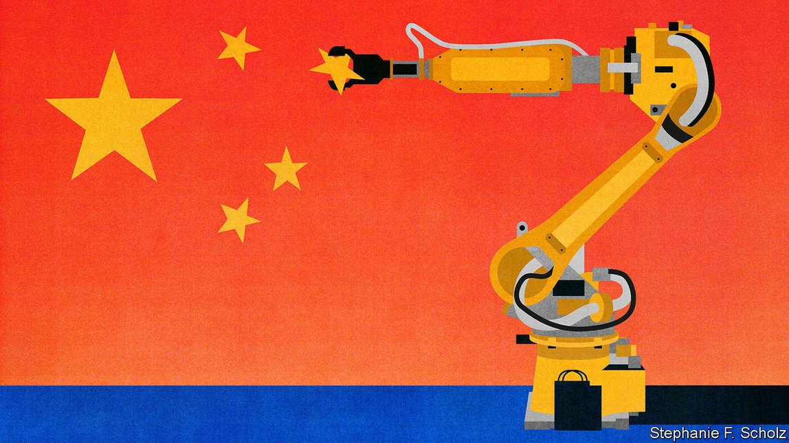
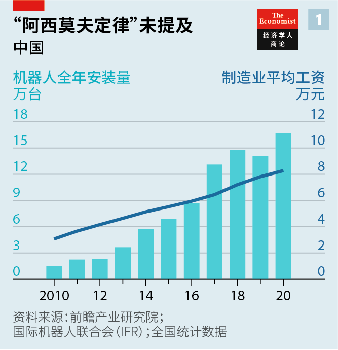
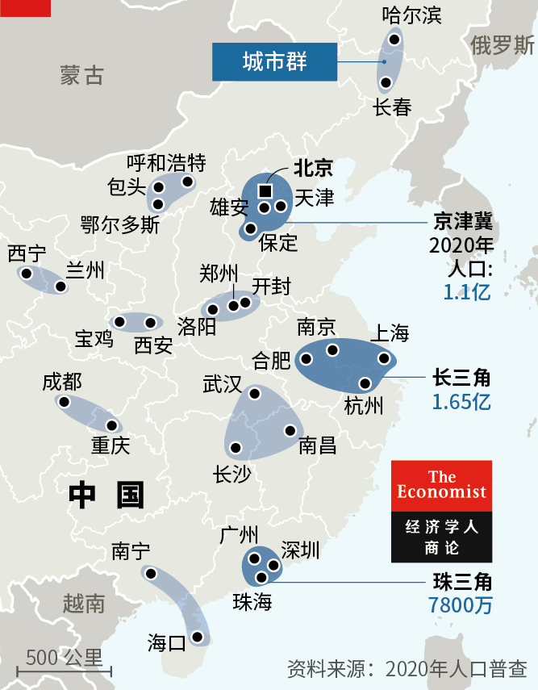
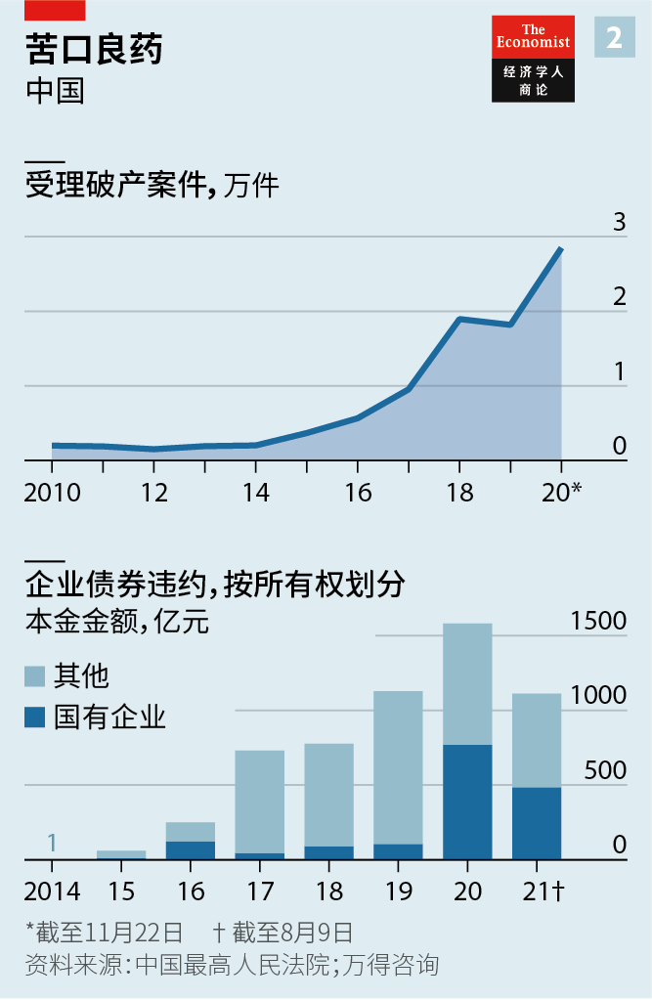
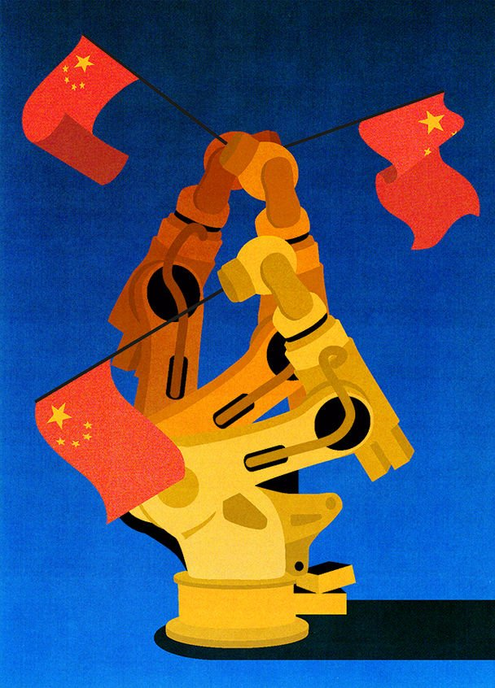
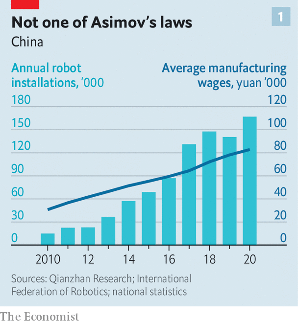
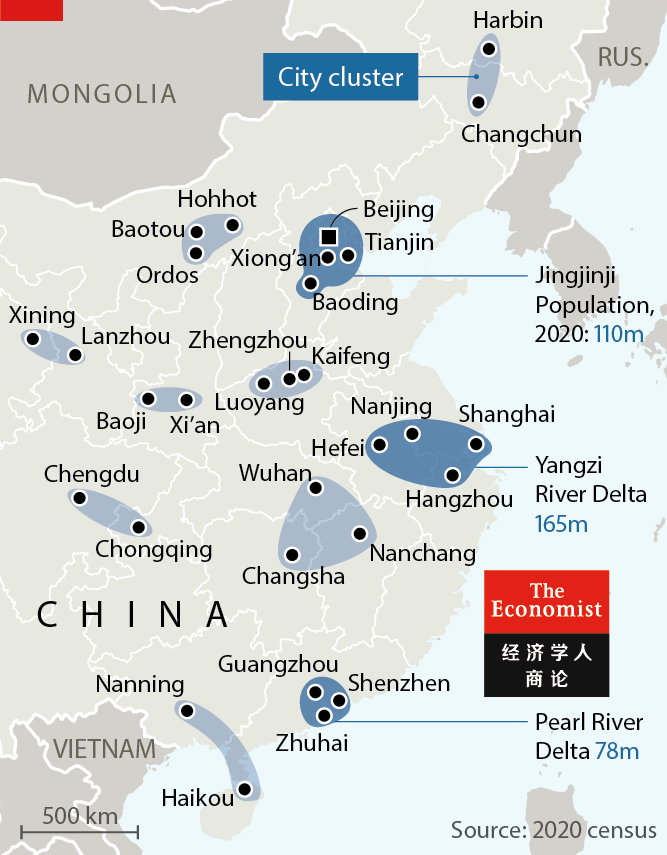
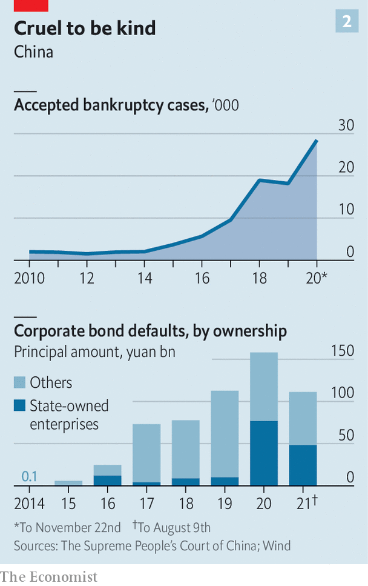

2021-09-01T05:51:12+00:00
自动化为人民
中国未来的经济潜力取决于其生产率
政府能提高它吗？【深度】
诺力集团的总部位于太湖之滨的长兴县，这家公司生产管理仓库的机器人工具，包括自动驾驶托盘搬运车和分拣系统等。这些工具让拣货和取货变得更快捷，也更少依赖人力。在诺力自己制造产品的工厂里就有各种机械臂在快速移动。“今非昔比。”公司创始人丁毅说。主厂房目前只有350名工人。他说，若是在过去，这里得需要将近四倍的人手。
2010年，全中国共有不到五万台工业机器人。如今则多达80万台，占全球工业机器人保有量的将近三分之一。这一快速增长有部分原因是机器人比以前更便宜了，功能也变得更强大。但另一个原因是随着中国变得更富裕和老龄化，工资水平已经大幅提升。
在2000年时年收入在8000元人民币左右（当时合1000美元）的工厂工人现在的年收入可能是这个数字的近十倍。这使得对像丁毅这样的老板来说，天平急速向自动化倾斜（见图表1）。几乎一夜之间，中国工业从劳动密集型转向了机器人密集型。
企业永远都会寻找这类方式来提高生产率。寻求经济增长的国家也一样。中国国家主席习近平已经将生产率列为优先事项。
从某些方面看，丁毅和习近平的抱负似乎相当协调一致。但许多观察人士认为，习近平对决定丁毅如何投资的市场力量依赖过少，而对国家权力依赖过多。其结果是，他有可能带领国家偏离他想要实现的高生产率的未来。未来全球经济的格局取决于这些批评者的看法是否正确，或者，拥有周密计划、背负荣耀使命的中国领导人能否实现他们的目标。
经济增长仅取决于三个基本要素：有多少人在工作；他们有多少资本可供支配；他们的生产效率如何。中国在过去40年里的高速增长是这三个要素全速会合的结果。
中国的城镇就业人口从1980年的一亿人猛增到今天的约五亿。资本存量的增长更加惊人。1980年，中国的现代化道路不到15,000公里，今天已超过70万公里，更不用说高速铁路、不计其数的机场、电网和所有其他工业装备。而与此同时，中国经历了一轮生产率快速增长，这在很大程度上要归功于逐步抛弃计划经济模式。竞争激活了经济。企业经营得更好了；哪里工资最高，工人就往哪里走。
1980年到2010年间，中国的GDP年均增速达到了10%。但在过去十年里速度慢了下来。人行现在认为潜在增长率为5.5%左右。劳动年龄人口不再增长；5月发布的最新全国人口普查结果显示总人口已处于缩减的边缘。基础设施即便不是供过于求也已日趋饱和；在人造环境上的支出已经达到富裕得多的国家的人均水平。
这就使得生产率这一项变得至关重要。但是，放松国家控制带来的生产率提升并没有得以维续。据世界银行计算，自2008年以来，中国的全要素生产率（TFP，无法用资本或劳动力解释的GDP增长）每年仅增长1.1%，不到之前30年里增速的三分之一。这仍然是美国同期水平的两倍。但对于习近平和他的政府而言，中国最近的过去才是要紧的比较对象。
这一放缓在一定程度上只是源于从追赶到被追赶的地位转变。发达国家的潜在生产率增长更低。但许多分析人士同时也认为，中国的经济模式尤其浪费，其债务的激增就证明了这一缺陷。现在，它每增加1元GDP就增加约4元新债务，而十年前它只需要2元债务就能取得同样的增长。
提速一级
更常引用毛泽东和马克思的习近平从2017年开始谈论全要素生产率以及提高它的必要性。去年3月，中国刚从新冠疫情解封之际，中共中央和国务院发布了提高生产率的32点“意见”。在今年3月敲定的五年规划中，政府明确提出劳动生产率增长高于GDP增长的目标。
如果要取得真正的进步，它将由企业和个人驱动，而非自上而下的指令。但政府的政策正在塑造展开这些进程的大环境。没有对政府的“32点”有任何不敬之意，但我们认为它们可以被分为三大类：工业现代化；沿着新运输线进一步城镇化；以及姑且称之为“追赶式改革”的举措。
第一大类，正如诺力所展示的，是产业升级。对企业而言这笔帐很简单：把自己的工厂现代化可以防止它们丧失竞争力。但政府有两个更宏大的目标。
最受外界关注的那个目标出于一种对地缘政治上的紧迫性的认知。面对美国日益增长的敌对情绪，中国希望在制造半导体和农业机械等各种关键商品上更加自力更生。这个目标体现在“中国制造2025”政策中，要求改造工厂、提升抱负、征服新产业。
另一个目标是经济哲学观的体现。中国相信，要维持高生产率有赖于保持一个庞大的制造基地。中国的领导人接受马克思主义理论训练，长期以来都认为工业相比服务业在经济上更有价值，在战略上更有用。不论这里说的服务业是餐饮还是创造金融衍生品都无甚区别。
这种理念值得商榷，因为服务部门的劳动可以是非常高产的。尽管如此，政府已将它确定为政策。它将力求防止制造业在GDP中的份额下降——这个数字目前约为25%，已经高于德国和日本这两个发达世界的工业巨头。
实现这一目标的计划远不止自动化装配线。政府正向企业提供建议和补贴，让它们把信息技术深深嵌入运营的方方面面。本地开发人员正在设计为企业量身定制的软件，以帮助它们更高效地管理流程。
黑湖智造就是这样一家开发公司。其创始人周宇翔说，直到几年前，工厂老板们还经常在纸上跟踪库存和订单。SAP和甲骨文公司基于电脑桌面的系统从来没有很好地移植到中国。现在，制造商们正在自己的手机上使用应用，让他们可以实时收集和分析数据并据此采取行动。“它们正在成为世界上最灵活的公司。”他说。中国希望在工业数字化中享有后发优势，就像它从一个现金主导的经济体一跃成为移动支付的全球领军者那样。
推动生产率的第二部分是更好的城镇化：创建更大的聚集区，让工人们更有机会进入其中。中国已经限制了它最大城市的规模，担心它们大到无法管理。与此同时，它也知道，更大的城镇聚集区能发展专业劳动力和相互交织的供应链，往往生产率更高。因此它正在发展超级城市群，让大型枢纽与较小的卫星城市连接。其思路是得到集聚的益处，同时却不会有可怕的交通拥堵、不堪重负的学校和其他超大城市的通病。
中国迄今批准了11个超级城市群的规划（见地图）。其中五个最大的城市群平均人口约为1.1亿，是世界上现有最大的都会区东京都会区四千万人口的近三倍。在围绕这一构思探讨数年后，政府目前正在启动投资来切实推进它。它承诺接下来三年里将城际通勤铁路线的长度翻番。
即使在偏远的中国内陆地区，城市景观也在发生变化。在西部，陕西省省会西安已与距离它30公里的城市咸阳融合，形成一个拥有1500万居民的都会区。从这里驱车往北一小时，农田已被物流园区和工业园区取代。“这地方过去偏僻得很。没人会来这儿。”中年农民工马玉（音译）说。现在，一辆动车在13分钟内就把她运到了西安。
梯子开始哐镗响
除了把城市连接起来，中国还让它们被5G移动网络覆盖，在高速公路和下水道中安装大量传感器来监测运行，在路灯柱上安上监控摄像头。共产党认为，所有这些将使得分布各地的超级城市群能被精确和高效地管理，使之成为超高产现代化的典范。而这可能会暴露出它对真正令城市充满创新魅力的原因缺乏洞察。
要充分利用城市的优势还需要改革户籍制度，现有的“户口”系统使得大多数外来务工人员在他们工作的城市沦为二等公民。没有本地户口，他们无法领取失业保险，子女难以在本地入学。
这不仅极为不公平，这样区别对待约两亿民众也面临高昂的代价。当工人们到了40多岁并开始担心医疗和养老金时，他们往往会回到自己的出生地。人行顾问蔡昉表示，他们这样做就是心甘情愿地选择了工资更低、生产率也更低的工作。多年来，政府一直在谈论户籍改革，但做得很少。不过，近期它已经实际简化了大多数城市（虽然不包括最大的城市）的落户申请程序。在超级城市群的内部办理社保关系转移也更容易了。
提高生产率的最后一类或可称之为“追赶式改革”：这一系列改变要让中国更接近于富裕国家的标准，尽管政治环境截然不同。高等教育系统为这类改革的潜在收益提供了佐证。人们很容易指出中国的学校挥之不去的那些问题，比如应试教育、对农村学生投资太少。但大学毕业生不断增加——从2000年的4600万增至今年的2.18亿——是工人技能持续大幅提高的一个很好的指标。
另一块关键的改革是放手让企业倒闭。确保资本配置良好的主要方法之一是让经营不佳的企业破产。蔡昉引用的证据表明，企业倒闭推动了富裕国家生产率增幅的50%之多。在中国企业界，这种创造性破坏的形式常被压制。不过，过去几年里破产数量已经飙升。
2020年，法院受理了近三万宗破产申请，创历史新高（见图表2）。投资者目前都在密切关注监管机构到底会不会让中国最大的房地产开发商恒大破产——这在过去是不可想象的。而在去年的债券违约事件中，国企约占了一半，打破了人们以为政府总是会出手拯救的预期。
试着跟上你
提升工人受教育水平和放任更多企业破产只是前路中的两条。32点生产率计划誓言要让企业首先更容易发债、更易与其他国家开展科研合作、能更好地保护知识产权等，不一而足。该计划在发布当时没有引来多少关注：许多观察家已经厌倦了中国的这类承诺。不过，既然还有这么多未完成事务，而政府又承认这一点，那么这种冷嘲热讽就有可能过了头——至少有那么一点吧。
中国的生产率政策真能奏效吗？历史上找不到什么可供参考的先例。过去也有威权国家晋级为成功的工业国家，虽然未曾发生在如此巨大的规模上。但它们能否超越这一阶段，答案并不显而易见。中国大陆目前的收入水平与韩国和台湾这两个它最接近的亚洲先行者在转变为民主政治并加强司法独立时的水平差不多。而回顾来看，后两者当时的这种转变似乎对它们治理日益复杂的经济体至关重要。
中国的情况依然将是党即是法。而习近平使用这种权力的方式正让投资者日益悲观。政府对科技宠儿的打击——从金融科技巨头蚂蚁金服到社交媒体巨头腾讯——提醒人们其监管可以如何反复无常。
中国官员们表示，他们正在限制大型科技平台的影响力以增加经济中的竞争，从而提高生产率。投资者很少相信这种说法。相反，他们逐渐意识到，习近平援引共产主义意识形态在某种程度上是真诚的。他似乎对商业领袖变得太过富有感到不安。而他已经将加强党对权力的控制作为自己的使命。当他说“党政军民学，东西南北中，党是领导一切的”，他不是说说而已。而这不是你能在许多经济学教科书中找得到的提高生产率的依据。
中国与世界许多地区之间的不信任加剧是另一个问题。中国将自己接入全球贸易体系所带来的增长提振并不仅仅是依靠开辟新的出口市场。国际竞争促使中国企业提高效率；接触到尖端技术让它们变得更先进。现在，从以色列到荷兰的国家都在更严格地审查中国投资并限制对中国出口一些关键投入。越来越多的公司选择取消在美国的收购计划，因为它们已经不可能完成。
官员们开始相信，像“中国制造2025”这类产业政策正日益成为实现某些类型的技术进步的唯一选择。人行前顾问李稻葵有信心它最终会成功：“我们不是苏联。我们拥有世界上最大的年轻工程师队伍。不得已时，我们会开发自己的技术。”或许如此。但这将是代价高昂的，无论是考虑到直接成本还是牺牲掉的其他支出优先项。
例如，养老金系统资金减少将抑制消费，继而抑制服务部门的投资和生产率。据信用评级机构标准普尔称，全力追求自力更生可能会在这个十年内让中国经济增长减少多达三分之一。但习近平不太可能动摇。他似乎相信真正雄心勃勃的技术投资——即便实际上可能常常失败——可能实现领先全球的突破，而这些突破将为他的国家同时带来影响力和生产率。
中国经济的走向最终可能好过这些趋势的预示，这么想的最主要原因是它一贯展现出的纠正错误的能力。上世纪九十年代，政府削减了臃肿的国有企业。过去五年里，它从对有关债务的担忧不屑一顾转变为发起去杠杆化运动——尽管那些努力还远未完成。国是金融改革研究院的刘胜军说，“当压力在那儿的时候，领导人是愿意做出改变的。”他们已经开始执着于如何提高生产率，这就是一个很好的起点。但是，实现他们的目标所需的变化远不止更多机器人，而可能超出他们所能容忍的范围。
2021-09-01T05:51:12+00:00
Automatic for the people
China’s future economic potential hinges on its productivity
Can the government boost it?
NOBLELIFT, BASED in Changxing, a town on the banks of Tai Lake, provides robotic tools for warehouse management: self-driving pallet jacks and sorting systems that make picking and fetching quicker and less dependent on humans. The factories in which it builds its wares are themselves a blur of robot arms. “There’s no comparison with the way things used to be,” says Ding Yi, Noblelift’s founder. The company’s main factory has only 350 workers. He says that in the old days it would have needed nearly four times as many.
In 2010 China was home to fewer than 50,000 industrial robots. Today it has 800,000—nearly one in three of the robots in the world. This is in part because robots are cheaper than they used to be, and more capable. But it is also because, as China has grown wealthier and older, wages have increased a lot.
Factory workers who earned about 8,000 yuan a year in 2000 ($1,000, at the time) may now make almost ten times that. For bosses like Mr Yi that has dramatically tipped the balance in favour of automation (see chart 1). Almost overnight, Chinese industry has gone from being labour-intensive to robot-intensive.
Companies are always in pursuit of such ways to increase productivity. Countries in search of economic growth like them, too. Xi Jinping, China’s president, has made productivity a priority.
In some respects, the ambitions of Mr Yi and Mr Xi seem well aligned. But many observers believe that Mr Xi is relying too little on the market forces which have shaped Mr Yi’s investments and too much on state power. As a result he risks steering the country away from the high-productivity future he wants to bring about. The shape of tomorrow’s global economy hangs on whether those critics are right or whether, armed with numerous detailed plans and burdened with glorious purpose, China’s leaders can achieve their goal.
Economic growth depends on just three basic factors: how many people are working; how much capital they have at their disposal; and how productive they are. China’s turbocharged growth over the past four decades was the result of all three factors coming together at full pelt.
The urban workforce soared from 100m in 1980 to about 500m today. The increase in the capital stock was even more dramatic. In 1980 China had fewer than 15,000 kilometres of modern road; today it has more than 700,000km, not to mention high-speed trains, too many airports to shake a stick at, power grids and all the other accoutrements of industry. And at the same time China experienced a productivity boom thanks, in large part, to the steady dismantlement of central planning. Competition shook up the economy. Businesses became better run and workers went wherever wages were highest.
From 1980 to 2010 China’s annual GDP growth averaged 10%. In the past decade, though, things slowed down. The central bank now thinks potential growth is about 5.5% a year. The working-age population is no longer expanding; the latest national census, published in May, revealed a total population on the brink of decline. The appetite for infrastructure is increasingly sated, if not glutted; spending on the built environment has reached the per-person levels of much wealthier countries.
That leaves productivity paramount. But the improvements which came from loosened state control have not been maintained. The World Bank calculates that, since 2008, China’s total-factor productivity (TFP)—the amount of GDP growth that cannot be explained by capital or labour—has grown by just 1.1% per year, less than a third the rate of the previous three decades. That is still double the level in America over the same decade. But the relevant comparator for Mr Xi and his colleagues is China’s recent past.
Some of this slowdown simply reflects the move from catch-up to caught-up. Developed countries have lower potential productivity growth. But many analysts also think that China’s economic model is particularly wasteful, a failing evidenced by its surging debts. Nowadays it adds about four yuan of new debt for every additional yuan of GDP; a decade ago it needed just two yuan of debt to get the same result.
Speed it up a notch
It was in 2017 that Mr Xi, better known for quoting Mao and Marx, started to talk of TFP and the need to increase it. In March last year, just as China emerged from its covid-19 lockdown, the central committee of the Communist Party and the State Council released a 32-point vision for boosting productivity. In the five-year plan for the economy which was finalised this March, the government specified that it wants labour productivity to grow quicker than GDP.
If there is to be real progress, it will be driven by companies and individuals, not top-down diktats. But the state’s moves are shaping the landscape in which those processes will play out. With all due respect to the government’s 32 points, it is possible to batch them into three broad categories: industrial modernisation; further urbanisation along new lines; and what might be called catch-up reforms.
The first element, as Noblelift illustrates, is the upgrading of industry. For companies the calculations are simple: modernising their factories stops them from becoming uncompetitive. The government, though, has two grander goals.
The one which has received most attention outside China is a perceived geopolitical imperative. Faced with rising American enmity, China wants to cultivate greater self-reliance in making essential products from semiconductors to agricultural machinery. That goal, encapsulated in the “Made in China 2025” policy, requires improving its factories, raising its ambitions and conquering new industries.
The other goal reflects economic philosophy. China believes that sustaining high productivity depends on retaining a large manufacturing base. Schooled in Marxist doctrine, China’s leaders have long regarded industry as more economically valuable and more strategically useful than services. Whether the services in question consist of waiting tables or creating financial derivatives hardly matters.
That is a debatable proposition: service-sector work can be highly productive. Nevertheless, the government has cemented it as policy. It will fight to prevent a decline in manufacturing’s share of GDP, which at about 25% is higher than that of Germany or Japan, the industrial heavyweights of the rich world.
Plans to achieve this go well beyond automating assembly lines. The government is giving companies advice and subsidies to get information technology deeply embedded into all their operations. Local developers are designing software tailored to helping them manage their processes more efficiently.
Until a few years ago factory bosses regularly kept track of inventories and orders on paper, says Zhou Yuxiang, founder of Black Lake, one such developer. The desktop-based systems of SAP and Oracle never translated well to China. Now, manufacturers are using applications on their mobile phones, letting them collect, analyse and act on data in real time. “They are becoming the most flexible companies in the world,” he says. The country hopes that it can enjoy a late-starter advantage in digitising industry, in the same way that it leapfrogged from being a cash-dominated economy to being the world leader in mobile payments.
The second part of the productivity push is better urbanisation: bigger agglomerations to which workers have better access. China has capped the size of its biggest cities, fearful that they might become unmanageable. At the same time, it knows that bigger urban agglomerations, which allow for specialised labour and interwoven supply chains, tend to be more productive. So it is developing giant city clusters in which big hubs are linked to smaller satellites. The idea is to generate the benefits of agglomeration without horrifically congested traffic, overburdened schools and other very-big-city blues.
China has approved plans for 11 mega-clusters in all (see map). The average population of the five biggest is about 110m, nearly three times bigger than the 40m in Greater Tokyo, the world’s biggest existing cluster. Having discussed the idea for several years the government is beginning to invest in making it real. Over the next three years it has committed to double the length of intercity commuter rail lines.
Even deep in China’s interior, cityscapes are changing. In the west, Xi’an, the capital of Shaanxi province, has been fused to Xianyang, a separate city 30km away, creating a metropolitan area with 15m residents. An hour’s drive north of the cities fields of grain have been replaced by logistics zones and industrial parks. “This place used to be far out of the way. No one would come here,” says Ma Yu, a middle-aged migrant from the countryside. Now a bullet train carries her to Xi’an in 13 minutes.
The ladder starts to clatter
As well as joining cities together, it is also blanketing them in 5G mobile networks, planting sensors galore in their highways and sewers to monitor performance, and studding their lampposts with surveillance cameras. The party believes all this will allow the distributed mega-cities to be managed with a precision and efficiency which makes them paragons of hyper-productive modernity. This may betray a lack of insight into what it is that really makes cities hives of innovative oomph.
Making the most of what cities offer also requires reform of the hukou, or residency permit, system which makes most migrants second-class citizens in the cities where they work. Without a local hukou they cannot collect unemployment insurance, and their children struggle to get into local schools.
Along with being profoundly unfair, discriminating against some 200m citizens this way is also costly. When workers hit their 40s and worry about access to health care and pensions, they tend to go back to their natal towns. In doing so they willingly opt for lower-paid, lower-productivity jobs, says Cai Fang, an adviser to the central bank. The government has talked about hukou reform for years and done little. Recently, though, it has actually eased the pathway to hukou in most cities (just not its very biggest). It has also made social benefits more portable within the urban mega-clusters.
The last of the three categories of productivity enhancement is what might be termed catch-up reform: a series of changes to bring the country closer to the standards of richer countries, albeit in a dramatically different political context. The higher-education system is testament to the potential gains. It is easy to point to problems that still bedevil China’s schools, from too much emphasis on test preparation to too little investment in rural students. Yet the increasing number of university graduates—46m in 2000, 218m this year—is a good proxy for large, continuous improvements in workers’ skills.
Another critical area of reform is allowing failure. One of the main ways to ensure that capital is allocated well is to let bad firms go bust; Mr Cai has cited evidence that firms going under drives as much as 50% of productivity growth in rich countries. In corporate China this form of creative destruction has often been suppressed. Over the past few years, though, bankruptcies have soared.
The courts accepted nearly 30,000 insolvency applications in 2020, a record (see chart 2). Investors are currently fixated on the saga of whether regulators will let Evergrande, the country’s biggest property developer, go bust—something which would previously have been unthinkable. And state-owned firms accounted for roughly half of last year’s bond defaults, giving the lie to expectations that the government would always save them.
Trying to keep up with you
Better education and more bankruptcies are just a couple of the paths forward. The 32-point productivity plan vows to make it easier for companies to issue bonds in the first place, to co-operate more with other countries on scientific research, to better protect intellectual property, and on and on. The plan received little attention at the time; many observers have grown tired of such promises by China. Yet the fact that there is still so much unfinished business, and that the government acknowledges this, may signal that such cynicism is being overdone, at least a bit.
Will China’s productivity policies actually work? History offers little by way of precedent. Autocracies have become successful industrial nations before, if never on such a huge scale. But it is not obvious that they can move beyond that. China is currently at roughly the same income level that its two closest Asian forerunners, South Korea and Taiwan, were when they became democratic and strengthened their independent legal institutions—a transition which, in retrospect, seems to have been essential for governing their increasingly complex economies.
In China the party will remain the law. And the way that Mr Xi is using that power is making investors increasingly pessimistic. The government’s crackdown on tech darlings, from Ant, a fintech dynamo, to Tencent, a social-media giant, has served up a reminder of just how capricious its regulations can be.
Chinese officials say they are limiting the power of big tech platforms in order to to make the economy more competitive and thus more productive. Few investors buy that. Instead, the realisation has seeped in that Mr Xi’s references to communist ideology are, at some level, sincere. He appears to be uncomfortable with business leaders getting too rich. And he has made it his mission to reinforce the party’s grip on power. When he says “Government, the military, society and schools, north, south, east and west—the party leads them all,” he means it. This is not a basis for improving productivity you will find in many economic textbooks.
Deepening distrust between China and much of the world is another problem. Plugging itself into the global trading system did not boost Chinese growth just by opening up new export markets. International competition pushed its companies to be more efficient; access to cutting-edge technology allowed them to become more sophisticated. Now countries from Israel to the Netherlands are subjecting Chinese investments to closer review and limiting exports of some key inputs. A lengthening list of companies have chosen to scrap acquisition plans in America because they would have been impossible to complete.
Officials have come to believe that industrial policy of the “Made in China 2025” sort is, to an increasing extent, the only option available for some types of technological improvement. Li Daokui, a former adviser to the central bank, is confident that it will eventually succeed: “We are not the Soviet Union. We have the world’s largest contingent of young engineers. If pushed, we will develop our own technology.” Perhaps. But it will be expensive, both in terms of the direct cost and other spending priorities forgone.
Less funding for pension systems, for example, will hold back consumption, thus holding back investment and productivity in the services sector. According to S&P, a credit-rating agency, a full-bore pursuit of self-reliance could lop as much as one-third off China’s growth this decade. But Mr Xi is unlikely to be swayed. He seems to believe that truly ambitious technology investment, though it may often fail, offers the possibility of world-beating breakthroughs that will bring his country both power and productivity.
The biggest reason to believe that things might turn out better for China’s economy than these trends would suggest is that it has consistently shown an ability to correct mistakes. In the 1990s the government cut down bloated state-owned firms. Over the past five years it went from dismissing concerns about its debts to launching a deleveraging campaign, though those efforts are far from complete. “Leaders are willing to change when the pressure is there,” says Liu Shengjun of the China Financial Reform Institute. That they have become obsessed with how to boost productivity is a good starting-point. Achieving their aim, though, will take much more than robots—and maybe more change than they can stomach. ■
2021-09-01T05:51:12+00:00
自動化為人民
中國未來的經濟潛力取決於其生產率
政府能提高它嗎？【深度】
諾力集團的總部位於太湖之濱的長興縣，這家公司生產管理倉庫的機器人工具，包括自動駕駛托盤搬運車和分揀系統等。這些工具讓揀貨和取貨變得更快捷，也更少依賴人力。在諾力自己製造產品的工廠里就有各種機械臂在快速移動。“今非昔比。”公司創始人丁毅說。主廠房目前只有350名工人。他說，若是在過去，這裡得需要將近四倍的人手。
2010年，全中國共有不到五萬台工業機器人。如今則多達80萬台，佔全球工業機器人保有量的將近三分之一。這一快速增長有部分原因是機器人比以前更便宜了，功能也變得更強大。但另一個原因是隨着中國變得更富裕和老齡化，工資水平已經大幅提升。
在2000年時年收入在8000元人民幣左右（當時合1000美元）的工廠工人現在的年收入可能是這個數字的近十倍。這使得對像丁毅這樣的老闆來說，天平急速向自動化傾斜（見圖表1）。幾乎一夜之間，中國工業從勞動密集型轉向了機器人密集型。
企業永遠都會尋找這類方式來提高生產率。尋求經濟增長的國家也一樣。中國國家主席習近平已經將生產率列為優先事項。
從某些方面看，丁毅和習近平的抱負似乎相當協調一致。但許多觀察人士認為，習近平對決定丁毅如何投資的市場力量依賴過少，而對國家權力依賴過多。其結果是，他有可能帶領國家偏離他想要實現的高生產率的未來。未來全球經濟的格局取決於這些批評者的看法是否正確，或者，擁有周密計劃、背負榮耀使命的中國領導人能否實現他們的目標。
經濟增長僅取決於三個基本要素：有多少人在工作；他們有多少資本可供支配；他們的生產效率如何。中國在過去40年里的高速增長是這三個要素全速會合的結果。
中國的城鎮就業人口從1980年的一億人猛增到今天的約五億。資本存量的增長更加驚人。1980年，中國的現代化道路不到15,000公里，今天已超過70萬公里，更不用說高速鐵路、不計其數的機場、電網和所有其他工業裝備。而與此同時，中國經歷了一輪生產率快速增長，這在很大程度上要歸功於逐步拋棄計劃經濟模式。競爭激活了經濟。企業經營得更好了；哪裡工資最高，工人就往哪裡走。
1980年到2010年間，中國的GDP年均增速達到了10%。但在過去十年里速度慢了下來。人行現在認為潛在增長率為5.5%左右。勞動年齡人口不再增長；5月發布的最新全國人口普查結果顯示總人口已處於縮減的邊緣。基礎設施即便不是供過於求也已日趨飽和；在人造環境上的支出已經達到富裕得多的國家的人均水平。
這就使得生產率這一項變得至關重要。但是，放鬆國家控制帶來的生產率提升並沒有得以維續。據世界銀行計算，自2008年以來，中國的全要素生產率（TFP，無法用資本或勞動力解釋的GDP增長）每年僅增長1.1%，不到之前30年里增速的三分之一。這仍然是美國同期水平的兩倍。但對於習近平和他的政府而言，中國最近的過去才是要緊的比較對象。
這一放緩在一定程度上只是源於從追趕到被追趕的地位轉變。發達國家的潛在生產率增長更低。但許多分析人士同時也認為，中國的經濟模式尤其浪費，其債務的激增就證明了這一缺陷。現在，它每增加1元GDP就增加約4元新債務，而十年前它只需要2元債務就能取得同樣的增長。
提速一級
更常引用毛澤東和馬克思的習近平從2017年開始談論全要素生產率以及提高它的必要性。去年3月，中國剛從新冠疫情解封之際，中共中央和國務院發布了提高生產率的32點“意見”。在今年3月敲定的五年規劃中，政府明確提出勞動生產率增長高於GDP增長的目標。
如果要取得真正的進步，它將由企業和個人驅動，而非自上而下的指令。但政府的政策正在塑造展開這些進程的大環境。沒有對政府的“32點”有任何不敬之意，但我們認為它們可以被分為三大類：工業現代化；沿着新運輸線進一步城鎮化；以及姑且稱之為“追趕式改革”的舉措。
第一大類，正如諾力所展示的，是產業升級。對企業而言這筆帳很簡單：把自己的工廠現代化可以防止它們喪失競爭力。但政府有兩個更宏大的目標。
最受外界關注的那個目標出於一種對地緣政治上的緊迫性的認知。面對美國日益增長的敵對情緒，中國希望在製造半導體和農業機械等各種關鍵商品上更加自力更生。這個目標體現在“中國製造2025”政策中，要求改造工廠、提升抱負、征服新產業。
另一個目標是經濟哲學觀的體現。中國相信，要維持高生產率有賴於保持一個龐大的製造基地。中國的領導人接受馬克思主義理論訓練，長期以來都認為工業相比服務業在經濟上更有價值，在戰略上更有用。不論這裡說的服務業是餐飲還是創造金融衍生品都無甚區別。
這種理念值得商榷，因為服務部門的勞動可以是非常高產的。儘管如此，政府已將它確定為政策。它將力求防止製造業在GDP中的份額下降——這個數字目前約為25%，已經高於德國和日本這兩個發達世界的工業巨頭。
實現這一目標的計劃遠不止自動化裝配線。政府正向企業提供建議和補貼，讓它們把信息技術深深嵌入運營的方方面面。本地開發人員正在設計為企業量身定製的軟件，以幫助它們更高效地管理流程。
黑湖智造就是這樣一家開發公司。其創始人周宇翔說，直到幾年前，工廠老闆們還經常在紙上跟蹤庫存和訂單。SAP和甲骨文公司基於電腦桌面的系統從來沒有很好地移植到中國。現在，製造商們正在自己的手機上使用應用，讓他們可以實時收集和分析數據並據此採取行動。“它們正在成為世界上最靈活的公司。”他說。中國希望在工業數字化中享有後發優勢，就像它從一個現金主導的經濟體一躍成為移動支付的全球領軍者那樣。
推動生產率的第二部分是更好的城鎮化：創建更大的聚集區，讓工人們更有機會進入其中。中國已經限制了它最大城市的規模，擔心它們大到無法管理。與此同時，它也知道，更大的城鎮聚集區能發展專業勞動力和相互交織的供應鏈，往往生產率更高。因此它正在發展超級城市群，讓大型樞紐與較小的衛星城市連接。其思路是得到集聚的益處，同時卻不會有可怕的交通擁堵、不堪重負的學校和其他超大城市的通病。
中國迄今批准了11個超級城市群的規劃（見地圖）。其中五個最大的城市群平均人口約為1.1億，是世界上現有最大的都會區東京都會區四千萬人口的近三倍。在圍繞這一構思探討數年後，政府目前正在啟動投資來切實推進它。它承諾接下來三年里將城際通勤鐵路線的長度翻番。
即使在偏遠的中國內陸地區，城市景觀也在發生變化。在西部，陝西省省會西安已與距離它30公里的城市咸陽融合，形成一個擁有1500萬居民的都會區。從這裡驅車往北一小時，農田已被物流園區和工業園區取代。“這地方過去偏僻得很。沒人會來這兒。”中年農民工馬玉（音譯）說。現在，一輛動車在13分鐘內就把她運到了西安。
梯子開始哐鏜響
除了把城市連接起來，中國還讓它們被5G移動網絡覆蓋，在高速公路和下水道中安裝大量傳感器來監測運行，在路燈柱上安上監控攝像頭。共產黨認為，所有這些將使得分布各地的超級城市群能被精確和高效地管理，使之成為超高產現代化的典範。而這可能會暴露出它對真正令城市充滿創新魅力的原因缺乏洞察。
要充分利用城市的優勢還需要改革戶籍制度，現有的“戶口”系統使得大多數外來務工人員在他們工作的城市淪為二等公民。沒有本地戶口，他們無法領取失業保險，子女難以在本地入學。
這不僅極為不公平，這樣區別對待約兩億民眾也面臨高昂的代價。當工人們到了40多歲並開始擔心醫療和養老金時，他們往往會回到自己的出生地。人行顧問蔡昉表示，他們這樣做就是心甘情願地選擇了工資更低、生產率也更低的工作。多年來，政府一直在談論戶籍改革，但做得很少。不過，近期它已經實際簡化了大多數城市（雖然不包括最大的城市）的落戶申請程序。在超級城市群的內部辦理社保關係轉移也更容易了。
提高生產率的最後一類或可稱之為“追趕式改革”：這一系列改變要讓中國更接近於富裕國家的標準，儘管政治環境截然不同。高等教育系統為這類改革的潛在收益提供了佐證。人們很容易指出中國的學校揮之不去的那些問題，比如應試教育、對農村學生投資太少。但大學畢業生不斷增加——從2000年的4600萬增至今年的2.18億——是工人技能持續大幅提高的一個很好的指標。
另一塊關鍵的改革是放手讓企業倒閉。確保資本配置良好的主要方法之一是讓經營不佳的企業破產。蔡昉引用的證據表明，企業倒閉推動了富裕國家生產率增幅的50%之多。在中國企業界，這種創造性破壞的形式常被壓制。不過，過去幾年裡破產數量已經飆升。
2020年，法院受理了近三萬宗破產申請，創歷史新高（見圖表2）。投資者目前都在密切關注監管機構到底會不會讓中國最大的房地產開發商恆大破產——這在過去是不可想象的。而在去年的債券違約事件中，國企約佔了一半，打破了人們以為政府總是會出手拯救的預期。
試着跟上你
提升工人受教育水平和放任更多企業破產只是前路中的兩條。32點生產率計劃誓言要讓企業首先更容易發債、更易與其他國家開展科研合作、能更好地保護知識產權等，不一而足。該計劃在發布當時沒有引來多少關註：許多觀察家已經厭倦了中國的這類承諾。不過，既然還有這麼多未完成事務，而政府又承認這一點，那麼這種冷嘲熱諷就有可能過了頭——至少有那麼一點吧。
中國的生產率政策真能奏效嗎？歷史上找不到什麼可供參考的先例。過去也有威權國家晉級為成功的工業國家，雖然未曾發生在如此巨大的規模上。但它們能否超越這一階段，答案並不顯而易見。中國大陸目前的收入水平與韓國和台灣這兩個它最接近的亞洲先行者在轉變為民主政治並加強司法獨立時的水平差不多。而回顧來看，後兩者當時的這種轉變似乎對它們治理日益複雜的經濟體至關重要。
中國的情況依然將是黨即是法。而習近平使用這種權力的方式正讓投資者日益悲觀。政府對科技寵兒的打擊——從金融科技巨頭螞蟻金服到社交媒體巨頭騰訊——提醒人們其監管可以如何反覆無常。
中國官員們表示，他們正在限制大型科技平台的影響力以增加經濟中的競爭，從而提高生產率。投資者很少相信這種說法。相反，他們逐漸意識到，習近平援引共產主義意識形態在某種程度上是真誠的。他似乎對商業領袖變得太過富有感到不安。而他已經將加強黨對權力的控制作為自己的使命。當他說“黨政軍民學，東西南北中，黨是領導一切的”，他不是說說而已。而這不是你能在許多經濟學教科書中找得到的提高生產率的依據。
中國與世界許多地區之間的不信任加劇是另一個問題。中國將自己接入全球貿易體系所帶來的增長提振並不僅僅是依靠開闢新的出口市場。國際競爭促使中國企業提高效率；接觸到尖端技術讓它們變得更先進。現在，從以色列到荷蘭的國家都在更嚴格地審查中國投資並限制對中國出口一些關鍵投入。越來越多的公司選擇取消在美國的收購計劃，因為它們已經不可能完成。
官員們開始相信，像“中國製造2025”這類產業政策正日益成為實現某些類型的技術進步的唯一選擇。人行前顧問李稻葵有信心它最終會成功：“我們不是蘇聯。我們擁有世界上最大的年輕工程師隊伍。不得已時，我們會開發自己的技術。”或許如此。但這將是代價高昂的，無論是考慮到直接成本還是犧牲掉的其他支出優先項。
例如，養老金系統資金減少將抑制消費，繼而抑制服務部門的投資和生產率。據信用評級機構標準普爾稱，全力追求自力更生可能會在這個十年內讓中國經濟增長減少多達三分之一。但習近平不太可能動搖。他似乎相信真正雄心勃勃的技術投資——即便實際上可能常常失敗——可能實現領先全球的突破，而這些突破將為他的國家同時帶來影響力和生產率。
中國經濟的走向最終可能好過這些趨勢的預示，這麼想的最主要原因是它一貫展現出的糾正錯誤的能力。上世紀九十年代，政府削減了臃腫的國有企業。過去五年里，它從對有關債務的擔憂不屑一顧轉變為發起去槓桿化運動——儘管那些努力還遠未完成。國是金融改革研究院的劉勝軍說，“當壓力在那兒的時候，領導人是願意做出改變的。”他們已經開始執着於如何提高生產率，這就是一個很好的起點。但是，實現他們的目標所需的變化遠不止更多機器人，而可能超出他們所能容忍的範圍。